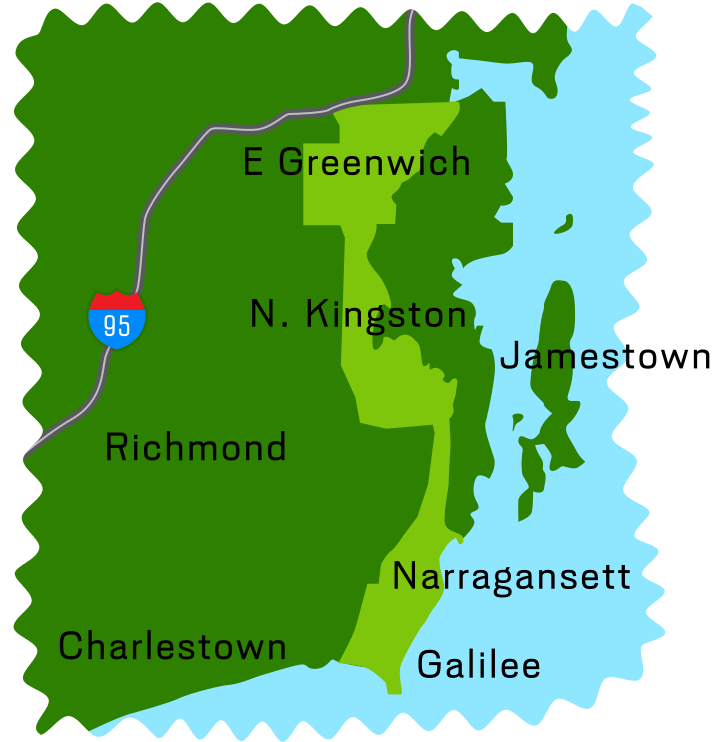

* Our districts fairly
Let’s Redraw* RI!
Let’s Redraw* RI!
Yes, we have a gerrymandering problem here in Rhode Island. Those in power who draw districts tend to do so to favor themselves, their political allies, and their political party.
At least nine states now use an independent redistricting commission to draw state or federal maps.
We propose an amendment to the Rhode Island Constitution creating an independent redistricting commission to draw our congressional and state legislative districts.
Politicians shouldn’t pick their voters
In our democracy, voters get to choose who holds office to represent them. But gerrymandering flips that on its head -- letting politicians manipulate their legislative districts so they can pick and choose their own voters.
The problem of gerrymandering has a long history right here in the Ocean State. From 1966 when Governor John Chafee vetoed the General Assembly's maps until today, Rhode Island has seen redistricting used to serve the interests of those in power.
There are lots of ways to tell the story of gerrymandering in Rhode Island. One way is to look at objective measures (see Measuring gerrymandering) and other ways are through stories (see Rocco's Robots) and maps (see Gerrymandering Burrillville).
Measuring gerrymandering
Social scientists have produced numerous measures to quantify partisan gerrymandering. The leading measure is known as the “efficiency gap.” It is a measure of the number of “wasted votes” that are cast for candidates who did not win, or in excess of the number needed to win for the winning candidate. An analysis by Nicholas Stephanopolis and Eric McGee found that using the efficiency gap, Rhode Island’s 2012 House of Representative plan is the most partisan gerrymandered in the United States.
Other measures of partisan gerrymandering include “partisan bias” and “mean-median.” By each of those measures in 2002, 1992, 1982, and 1972, Rhode Island maps suffered from partisan gerrymanders.
Illustrating gerrymandering
District issues
-

Water contiguity
One important principle is that districts must be contiguous — all of the land must be touching. With our unique coastline, sometimes map-makers have taken advantage by creating districts, such as House 67) that only connect by water. The boundary jumps over natural dividers to include non-contiguous parts of Barrington while putting part of Warren with Bristol in District 68 See area in Google Maps.
-

Not compact
The Rhode Island Constitution contains only two requirements for districts; equal population and compactness. Even then some districts defy reason. Current Senate District 35 (shown above in lime green) stretches from Warwick Showcase Cinemas down to Point Judith Lighthouse, 22 miles if driven on routes 4 and 1, both of which run through the district. When seen on Google Maps, it’s visible that the district approaches ½ the height of the state.
-

Separating communities of interest
One important principle we propose is requiring that map makers respect communities of interest. House 69 represents not maintaining communities of interest because it puts Prudence Island with a district composed primarily of Bristol, yet Prudence Island is part of the Portsmouth School District. See area in Google Maps
-
Rocco’s Robots
In 1981 Senate Majority Leader Rocco Quattrocchi (D-Providence) sought to punish both Republican stalwart Lila Sapinsley (R-Providence) and fellow Democratic “maverick” Senator Richard Licht (D-Providence) by combining their East Side districts. Bucking his party Licht joined Sapinsley in suing to overturn the new districts. When the three-judge panel of the federal court ruled to overturn the maps they wrote, “The only plausible explanation [for the maps are] to preserve the senatorial seats of incumbents favorable to the Democratic leadership and punish incumbents critical of the leadership.”
-
Gerrymandering Burrillville

In 2010, Rep. Cale Keable (District 47 shown in light green above) won a seat in the Rhode Island House, beating opponent Republican Don Fox by 196 votes. The 2010 censis required that 350 people needed to shift out of District 47 to meet the equal population requirement. Instead, seemingly to help Keable maintain his seat, more than 1500 people were moved, including Don Fox, whose house (starred on map) was moved into District 48 representative by another Republican, Representative Brian Newberry.
Voters should pick their politicians
We propose putting this constitutional amendment on the November 2020 ballot. Should voters approve the amendment, a 15-member independent redistricting commission would be created in 2021. No one with potential conflicts of interests (including lobbyists and relatives of legislators) would be eligible to serve. The commission would have sole authority to draw the new state legislative and Congressional districts for Rhode Island.
The Commission would use these criteria
Listed in order of priority:
- Comply with the U.S. Constitution
- Population equality (one person, one vote)
- Comply with the Voting Rights Act
- Geographically contiguous
- Promote partisan fairness
- Maintain communities of interest
- Geographical compactness
Redistricting timeline
April 1, 2020 -- Census Day July 31, 2020 -- Census enumeration concludes November 3, 2020 -- Independent Redistricting Commission proposal on the ballot December 31, 2020 -- U.S. Census Bureau delivers population estimates the the President -- Rhode Island finds out whether we retain two congressional districts January 1, 2021 -- Independent Redistricting Commission amendment take effect January - February 2021 -- General Assembly passes enabling statute for redistricting commission March 2021 -- U.S. Census Bureau sends P.L. 94-171 to the states May 1, 2021 -- Deadline for appointments to Independent Redistricting Commission January 1, 2022 -- Deadline for Independent Redistricting Commission to adopt final plans June 2022 -- Filing deadline for office based on new maps September 2022 -- First primary elections based on new maps November 2022 -- First general election based on new maps